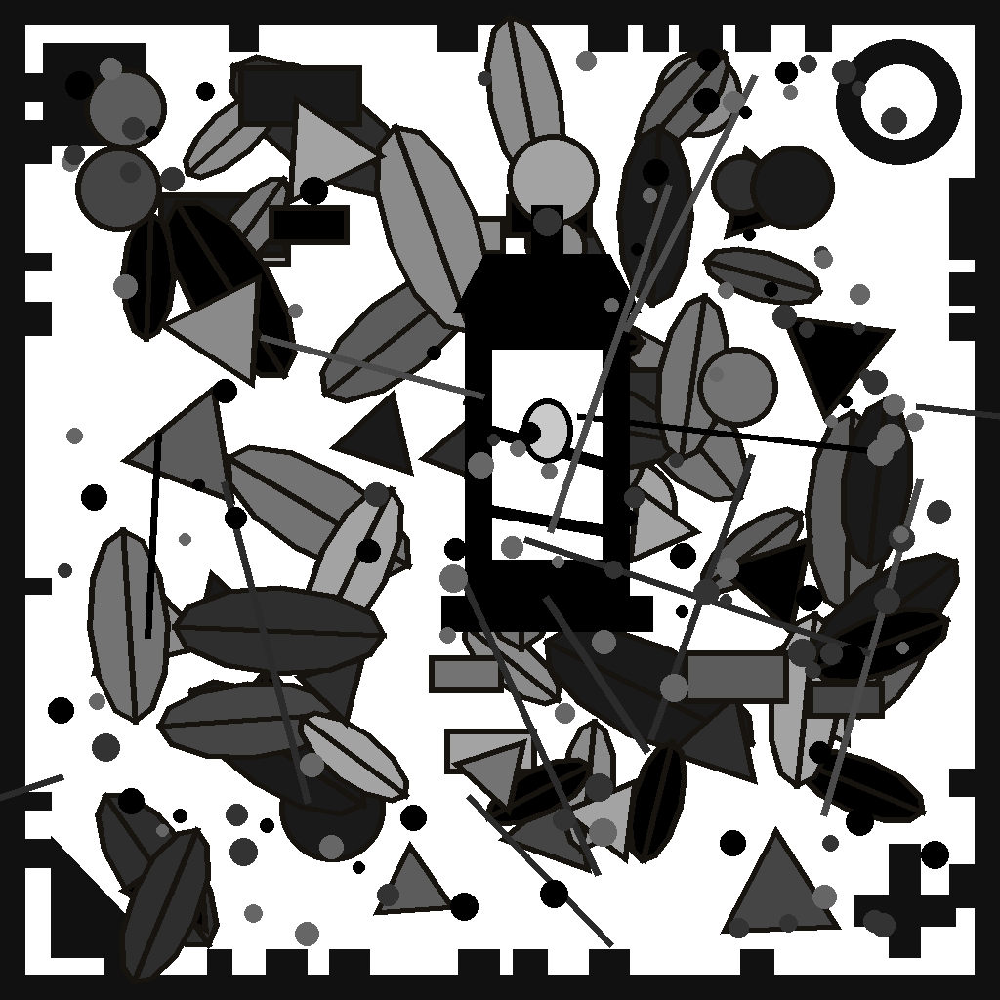

Le impostazioni si salvano da sole.
Serve un piccolo server gratis (istruzioni in server/signaling.mjs → Deno Deploy). Incolla qui l'indirizzo, es. wss://tuo.deno.dev
Uno crea, gli altri entrano (un codice per ciascuno: rifai «invita» per ogni amico). Connessione diretta e cifrata.
Registrati gratis su metered.ca (20 GB/mese), copia i 3 valori TURN e incollali qui: la connessione diventa affidabile ovunque.
1 Manda questo codice all'amico
2 Incolla qui la sua risposta:
1 Incolla il codice della stanza:
2 Rimandala a chi ha creato la stanza
Quando l'amico la conferma, siete collegati.
| Click sul terreno | il gatto ci va da solo (sale i gradini col salto) |
| WASD + Spazio | movimento manuale e salto |
| Trascina / Rotella | orbita la camera / zoom |
| Tavolozza | tocca un posto per averlo in mano (o 1–8 e la rotella, con la tastiera) |
| Bolla 🫧 | usa quel che hai in mano · tienila premuta e lo ripete (muri e scavi senza martellare il dito) |
| Tasto centrale | ti mette in mano quello che stai guardando |
| Tavolozza | trascina un posto su un altro per riordinare · tieni premuto per fissarlo 📌 o svuotarlo |
| B | passa tra Esplora e Costruisci (cioè: prendi o lasci la zampa 🐾) |
| R | ruota il furni prima di piazzare |
| Click destro | (in Costruisci) rimuovi blocco o furni |
| Click sul lampione | (in Esplora) accendi / spegni |
| Click sulla panchina | (in Esplora) il gatto ci va e si siede — muoviti per alzarti |
| Click su un macchinario | (in Esplora) lo AZIONA: l'onda parte, il frutto si raccoglie… |
| Tieni premuto ⚙️ | (in Esplora) apre le MANOPOLE del macchinario — o Maiusc+E per quello più vicino |
| Raccolta | rompere rimette nell'inventario, piazzare consuma (∞ nel debug) |
| T | manda avanti il tempo |
| I (o 🎒) | zaino: tutto quello che esiste, per categoria o cercandolo. Un tocco te lo mette in mano — dallo zaino non si perde mai niente, la tavolozza è solo ciò che tieni fuori |
| 🪣 Secchio | (in Costruisci) raccoglie una sorgente / la versa — 2 sorgenti vicine = acqua infinita |
| F3 | menu di debug (stats, arcipelago, overlay, P2P di prova) |
| V | volo libero (Spazio sali · Shift scendi) |

inquadra questo schermo dall'altro dispositivo · tocca per chiudere